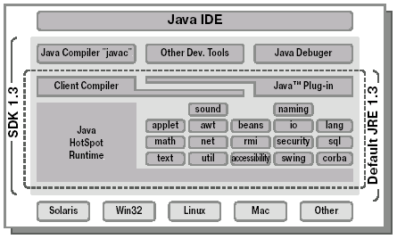
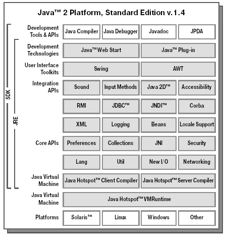

Платформа Java
Итак, Java обладает длинной и непростой
историей развития, однако
настало время рассмотреть, что же получилось у создателей, какими
свойствами обладает данная технология.
Самое широко известное, и в тоже время вызывающее самые бурные
споры, свойство - много- или
кроссплатформенность.
Уже говорилось,
что оно достигается за счет использования виртуальной машины
JVM,
которая является обычной программой, исполняемой операционной
системой и предоставляющей Java-приложениям
все необходимые
возможности. Поскольку все параметры JVM
специфицированы, то
остается единственная задача - реализовать виртуальные машины на
всех существующих и используемых платформах.
Наличие виртуальной машины определяет многие свойства
Java,
однако сейчас остановимся на следующем вопросе - является
Java
языком компилируемым или интерпретируемым? На самом деле,
используются оба подхода.
Исходный код любой программы на языке
Java представляется
обычными текстовыми файлами, которые могут быть созданы в любом
текстовом редакторе или специализированном средстве разработки и
имеют расширение .java. Эти файлы подаются на вход
Java-компилятора,
который транслирует их в специальный
Java байт-код. Именно
этот компактный и эффективный набор инструкций поддерживается
JVM и
является неотъемлемой частью платформы Java.
Результат работы компилятора сохраняется в бинарных файлах с
расширением .class. Java-приложение,
состоящее из таких файлов,
подается на вход виртуальной машине, которая начинает их исполнять,
или интерпретировать, так как сама является программой.
Многие разработчики поначалу жестко критиковали смелый лозунг Sun
"Write once, run everywhere", обнаруживая все больше и больше
несоответствий и нестыковок на различных платформах. Однако надо
признать, что они просто были слишком нетерпеливы.
Java только
появилась на свет, а первые версии спецификаций были недостаточно
исчерпывающими.
Очень скоро специалисты Sun пришли к выводу, что просто свободно
публиковать спецификации (что уже делалось задолго до
Java)
недостаточно. Необходимо еще и создавать специальные процедуры
проверки новых продуктов на соответствие стандартам. Первый такой
тест для JVM содержал всего около
600 проверок, через год их число
выросло до десяти тысяч и с тех пор все время увеличивается (именно
его в свое время не смог пройти MS IE 4.0). Безусловно, авторы
виртуальных машин все время совершенствовали их, устраняя ошибки и
оптимизируя работу. Все-таки любая, даже очень хорошо задуманная,
технология требует времени для создания высококачественной
реализации. Аналогичный путь развития сейчас проходит
Java 2
Micro Edition (J2ME), но об этом позже.
Следующим по важности свойством является объектная
ориентированность Java, что всегда
упоминается во всех статьях и
пресс-релизах. Сам ООП рассматривается в следующей лекции, однако
важно подчеркнуть, что в Java практически
все реализовано в виде
объектов - потоки выполнения (threads) и потоки данных (streams),
работа с сетью, работа с изображениями, с пользовательским
интерфейсом , обработка ошибок и т.д.
В конце концов, любое
приложение на Java - это набор классов,
описывающих новые типы объектов.
Подробное рассмотрение объектной модели Java
проводится на протяжении всего курса, однако обозначим основные особенности.
Прежде всего, создатели отказались от множественного наследования.
Было решено, что оно слишком усложняет и запутывает программы. В
языке используется альтернативный подход - специальный тип
"интерфейс". Он подробно рассматривается
в соответствующей лекции.
Далее, в Java применяется
строгая типизация. Это означает,
что любая переменная и любое выражение имеет тип, известный уже на
момент компиляции. Такой подход применен для упрощения выявления
проблем, ведь компилятор сразу сообщает об ошибках и указывает их
расположение в коде. Поиск же исключительных ситуаций (exceptions -
так в Java называются некорректные
ситуации) во время исполнения
программы (runtime) потребует сложного тестирования, при этом
причина дефекта может обнаружиться совсем в другом классе. Таким
образом, нужно прикладывать дополнительные усилия при написании
кода, зато существенно повышается его надежность (а это одна из
основополагающих целей, для которых и создавался новый язык).
В Java существует всего 8 типов
данных, которые не являются
объектами. Они были определены с самой первой версии и никогда не
менялись. Это пять целочисленных типов: byte, short, int, long, а
также к ним относят символьный char. Затем два дробных типа float и
double и, наконец, булевский тип boolean. Такие типы
называются простые , или
примитивные (от английского
primitive), и они подробно
рассматриваются в лекции,
посвященной типам данных. Все остальные типы -
объектные или
ссылочные
(англ. reference).
Синтаксис Java почему-то многих ввел в
заблуждение. Он
действительно создан на основе синтаксиса языков C/C++, так что если
посмотреть на исходный код программ, написанных на этих языках и на
Java , то не сразу удается понять, какая
из них на каком языке
написана. Это почему-то дало многим повод думать, что
Java - это
упрощенный C++ с дополнительными возможностями, такими как
garbage collector.
Автоматический сборщик мусора
(garbage collector) мы
рассмотрим чуть ниже, но считать, что Java
такой же язык, как и C++,- большое заблуждение.
Конечно, разрабатывая новую технологию, авторы
Java опирались на
широко распространенный язык программирования по целому ряду причин.
Во-первых, они сами на тот момент считали C++ своим основным
инструментом. Во-вторых, зачем придумывать что-то новое, когда есть
вполне подходящее старое? Наконец, очевидно, что незнакомый
синтаксис отпугнет разработчиков и существенно осложнит внедрение
нового языка, а ведь Java должна
была максимально быстро получить
широкое распространение. Поэтому синтаксис был лишь слегка упрощен,
чтобы избежать слишком запутанных конструкций.
Но, как уже говорилось, С++ принципиально не годился для новых
задач, которые поставили себе разработчики из компании Sun, поэтому
модель Java была построена заново,
причем в соответствии с совсем другими целями. Дальнейшие лекции
будут постепенно раскрывать конкретные различия.
Что же касается объектной модели, то она скорее была построена по
образцу таких языков, как Smalltalk от IBM, или разработанный еще в
60-е годы в Норвежском Вычислительном Центре язык Simula, на который
ссылается сам создатель Java Джеймс Гослинг.
Другое немаловажное свойство Java - легкость
в освоении и разработке - также получило неоднозначную оценку. Действительно,
авторы потрудились избавить программистов от наиболее
распространенных ошибок, которые порой допускают даже опытные
разработчики на C/C++. И первое место здесь занимает работа с
памятью.
В Java с самого начала был введен
механизм автоматической
сборки мусора (от английского
garbage collector). Предположим,
программа создает некоторый объект, работает с ним, а дальше
наступает момент, когда он больше уже не нужен. Необходимо
освободить занимаемую память, чтобы не мешать операционной системе
нормально функционировать. В С/С++ это необходимо делать явным
образом из программы. Очевидно, что при таком подходе существует две
опасности - либо удалить объект, который еще кому-то необходим (и
если к нему действительно произойдет обращение, то возникнет
ошибка), либо не удалять объект, ставший ненужным, а это означает
утечку памяти, то есть программа начинает потреблять все большее
количество оперативной памяти.
При разработке на Java программист
вообще не думает об
освобождении памяти. Виртуальная машина сама подсчитывает количество
ссылок на каждый объект, и если оно становится равным нулю, то такой
объект помечается для обработки
garbage collector . Таким образом,
программист должен следить лишь за тем, чтобы не оставалось ссылок
на ненужные объекты. Сборщик мусора - это фоновый поток исполнения,
который регулярно просматривает существующие объекты и удаляет уже
не нужные. Из программы никак нельзя повлиять на работу
garbage collector,
можно только явно инициировать его очередной проход с
помощью стандартной функции. Ясно, что это существенно упрощает
разработку программ, особенно для начинающих программистов.
Однако опытные разработчики были недовольны тем, что они не могут
полностью контролировать все, что происходит с их системой. Нет
точной информации, когда именно будет удален объект, ставший
ненужным, когда начнет работать (а значит, и занимать системные
ресурсы) поток сборщика мусора и т.д. Но, при всем уважении к опыту
таких программистов, необходимо отметить, что подавляющее количество
сбоев программ, написанных на С/С++, приходится именно на
некорректную работу с памятью, причем порой это случается даже с
широко распространенными продуктами весьма серьезных компаний.
Кроме того, особый упор делался на легкость освоения новой
технологии. Как уже было сказано, ожидалось (и эти ожидания
оправдались, в подтверждение правильности выбранного пути!), что
Java должна получить максимально
широкое применение, даже в тех
компаниях, где никогда до этого не занимались программированием на
таком уровне (бытовая техника типа тостеров и кофеварок, создание
игр и других приложений для сотовых телефонов и т.д.). Был и целый
ряд других соображений. Продукты для обычных пользователей, а не
профессиональных программистов, должны быть особенно надежными.
Internet стал Всемирной Сетью, поскольку появились
непрофессиональные пользователи, а возможность создавать
апплеты для
них не менее привлекательна. Им требовался простой инструмент для
создания надежных приложений.
Наконец, Internet-бум 90-х годов набирал обороты и выдвигал
новые, более жесткие требования к срокам разработки. Многолетние
проекты, которые были в прошлом обычным делом, перестали отвечать
потребностям заказчиков, новые системы надо было создавать максимум
за год, а то и за считанные месяцы.
Кроме введения garbage collector,
были предприняты и другие шаги
для облегчения разработки. Некоторые из них уже упоминались - отказ
от множественного наследования, упрощение синтаксиса и др.
Возможность создания многопоточных приложений была реализована в
первой же версии Java (исследования
показали, что это очень удобно
для пользователей, а существующие стандарты опираются на телетайпные
системы, которые устарели много лет назад). Другие особенности будут
рассмотрены в следующих лекциях. Однако то, что создание и поддержка
систем действительно проще на Java,
чем на C/C++, давно является
общепризнанным фактом. Впрочем, все-таки эти языки созданы для
разных целей, и каждый имеет свои неоспоримые преимущества.
Следующее важное свойство
Java - безопасность
. Изначальная
нацеленность на распределенные приложения, и в особенности решение
исполнять апплеты на клиентской машине,
сделали вопрос защиты одним
из самых приоритетных. При работе любой виртуальной машины
Java действует целый комплекс мер.
Далее приводится лишь краткое описание некоторых из них.
Во-первых, это правила работы с памятью. Уже говорилось, что
очистка памяти производится автоматически. Резервирование ее также
определяется JVM, а не компилятором,
или явным образом из программы,
разработчик может лишь указать, что он хочет создать еще один новый
объект. Указатели по физическим адресам отсутствуют принципиально.
Во-вторых, наличие виртуальной машины-интерпретатора значительно
облегчает отсечение опасного кода на каждом этапе работы. Сначала
байт-код загружается в систему, как правило, в виде class-файлов.
JVM тщательно проверяет, все ли они
подчиняются общим правилам безопасности
Java и не созданы ли злоумышленниками с помощью
каких-то других средств (и не искажены ли при передаче). Затем во
время исполнения программы интерпретатор легко может проверить
каждое действие на допустимость. Возможности классов, которые были
загружены с локального диска или по сети, существенно различаются
(пользователь легко может назначать или отменять конкретные права).
Например, апплеты по умолчанию
никогда не получит доступ к локальной
файловой системе. Такие встроенные ограничения есть во всех
стандартных библиотеках Java.
Наконец, существует механизм подписания
апплетов и других
приложений, загружаемых по сети. Специальный сертификат гарантирует,
что пользователь получил код именно в том виде, в каком его выпустил
производитель. Это, конечно, не дает дополнительных средств защиты,
но позволяет клиенту либо отказаться от работы с приложениями
ненадежных производителей, либо сразу увидеть, что в программу
внесены неавторизованные изменения. В худшем случае он знает, кто
ответственен за причиненный ущерб.
Совокупность описанных свойств Java
позволяет утверждать, что
язык весьма приспособлен для разработки Internet- и интранет
(внутренние сети корпораций)-приложений.
Наконец, важная отличительная особенность
Java - это его
динамичность. Язык очень удачно
задуман, в его развитии
участвуют сотни тысяч разработчиков и многие крупные компании.
Основные этапы этого развития кратко освещены в следующем разделе.
Итак, подведем итоги. Java-платформа
обладает следующими преимуществами:
- переносимость, или
кроссплатформенность;
- объектная ориентированность, создана эффективная объектная
модель;
- привычный синтаксис С/С++;
- встроенная и прозрачная модель безопасности
;
- ориентация на Internet-задачи, сетевые распределенные
приложения;
-
динамичность, легкость развития и
добавления новых возможностей;
- простота освоения.
Но не следует считать, что более легкое освоение означает, что
изучать язык не нужно вовсе. Чтобы писать действительно хорошие
программы, создавать большие сложные системы, необходимо четкое
понимание всех базовых концепций Java
и используемых библиотек.
Именно этому и посвящен данный курс.
Основные версии и продукты Java
Сразу оговоримся, что под продуктами здесь понимаются программные
решения от компании Sun, являющиеся "образцами реализации"
(reference implementation).
Итак, впервые Java была объявлена
23 мая 1995 года. Основными
продуктами, доступными на тот момент в виде бета-версий, были:
-
Java language specification, JLS,
спецификация языка Java
(описывающая лексику, типы данных, основные конструкции и т.д.);
- спецификация JVM;
-
Java Development Kit,
JDK - средство разработчика, состоящее в
основном из утилит, стандартных библиотек классов и
демонстрационных примеров.
Спецификация языка была составлена настолько удачно, что
практически без изменений используется и по сей день. Конечно, было
внесено большое количество уточнений, более подробных описаний, были
добавлены и некоторые новые возможности (например, объявление
внутренних классов), однако основные концепции остаются неизменными.
Данный курс в большой степени опирается именно на спецификацию
языка.
Спецификация JVM предназначена в
первую очередь для создателей
виртуальных машин, а потому практически не используется
Java-программистами.
JDK долгое время было базовым
средством разработки приложений.
Оно не содержит никаких текстовых редакторов, а оперирует только уже
существующими Java-файлами.
Компилятор представлен утилитой
javac
(java compiler) .
Виртуальная машина реализована
программой java . Для тестовых запусков
апплетов существует
специальная утилита appletviewer.
Наконец, для автоматической
генерации документации на основе исходного кода прилагается средство
javadoc.
Первая версия содержала всего 8 стандартных библиотек:
- java.lang - базовые классы, необходимые для работы любого
приложения (название - сокращение от language);
- java.util - многие полезные вспомогательные классы;
- java.applet - классы для создания апплетов;
- java.awt, java.awt.peer - библиотека для создания графического
интерфейса пользователя
(GUI), называется
Abstract Window Toolkit,
AWT, подробно описывается в лекции 11;
- java.awt.image - дополнительные классы для работы с
изображениями;
- java.io - работа с потоками данных (streams) и с файлами;
- java.net - работа с сетью.
Таким образом, все библиотеки начинаются с java,
именно они являются стандартными. Все остальные (начинающиеся с com, org и др.)
могут меняться в любой версии без поддержки совместимости.
Финальная версия JDK 1.0 была выпущена в
январе 1996 года.
Сразу поясним систему именования версий. Обозначение версии
состоит из трех цифр. Первой пока всегда стоит 1. Это означает, что
поддерживается полная совместимость между всеми версиями 1.х.х. То
есть программа, написанная на более старом JDK,
всегда успешно
выполнится на более новом. По возможности соблюдается и обратная
совместимость - если программа откомпилирована более новым
JDK, а
никакие новые библиотеки не использовались, то в большинстве случаев
старые виртуальные машины смогут выполнить такой код.
Вторая цифра изменилась от 0 до 4 (последняя на данный момент). В
каждой версии происходило существенное расширение стандартных
библиотек (212, 504, 1781, 2130 и 2738 - количество классов и
интерфейсов с 1.0 по 1.4), а также
добавлялись некоторые новые
возможности в сам язык. Менялись и утилиты, входящие в
JDK.
Наконец, третья цифра означает развитие одной версии. В языке или
библиотеках ничего не меняется, лишь устраняются ошибки,
производится оптимизация, могут меняться (добавляться) аргументы
утилит. Так, последняя версия JDK 1.0 - 1.0.2.
Хотя с развитием версии 1.х ничего не удаляется, конечно,
какие-то функции или классы устаревают. Они объявляются
deprecated, и хотя они будут
поддерживаться до объявления 2.0
(а про нее пока ничего не было слышно), пользоваться ими не
рекомендуется.
Вместе с первым успехом JDK 1.0 подоспела
и критика. Основные
недостатки, обнаруженные разработчиками, были следующими. Во-первых,
конечно, производительность. Первая виртуальная машина работала
очень медленно. Это связано с тем, что JVM,
по сути, представляет
собой интерпретатор, который работает всегда медленнее, чем
исполняется откомпилированный код. Однако успешная оптимизация,
устранившая этот недостаток, была еще впереди. Также отмечались
довольно бедные возможности AWT, отсутствие
работы с базами данных и другие.
В декабре 1996 года объявляется новая версия
JDK 1.1, сразу
выкладывается для свободного доступа бета-версия. В феврале 1997
года выходит финальная версия. Что было добавлено в новом выпуске
Java?
Конечно, особое внимание было уделено производительности. Многие
части виртуальной машины были оптимизированы и переписаны с
использованием Assembler, а не C, как до этого. Кроме того, с
октября 1996 года Sun развивает новый продукт -
Just-In-Time
компилятор, JIT. Его задача - транслировать
Java байт-код
программы в "родной" код операционной системы. Таким образом, время
запуска программы увеличивается, но зато выполнение может ускоряться
в некоторых случаях до 50 раз! С июля 1997 года появляется
реализация под Windows и JIT стандартно входит в
JDK с возможностью отключения.
Были добавлены многие новые важные возможности.
JavaBeans-
технология, объявленная еще в 1996 году, позволяет создавать
визуальные компоненты, которые легко интегрируются в визуальные
средства разработки. JDBC (Java
DataBase Connectivity)
обеспечивает доступ к базам данных. RMI
(Remote Method Invocation) позволяет легко создавать распределенные приложения.
Были усовершенствованы поддержка национальных языков и система
безопасности.
За первые три недели JDK 1.1 был скачан
более 220.000 раз, менее
чем через год - более двух миллионов раз. На данный момент версия
1.1 считается полностью устаревшей и ее развитие остановилось на
1.1.8. Однако из-за того, что самый распространенный
браузер MS IE
до сих пор поддерживает только эту версию, она продолжает
использоваться для написания небольших
апплетов.
Кроме того, с 11 марта 1997 года компания Sun начала предлагать
Java Runtime Environment,
JRE (среду выполнения
Java).
По сути дела, это минимальная реализация виртуальной машины,
необходимая для исполнения Java-приложений,
без компилятора и других
средств разработки. Если пользователь хочет только запускать
программы, это именно то, что ему нужно.
Как видно, самым главным недостатком осталась слабая поддержка
графического интерфейса
пользователя (GUI). В декабре 1996 года
компании Sun и Netscape объявляют новую библиотеку IFC (Internet
Foundation Classes), разработанную Netscape полностью на
Java и
предназначенную как раз для создания сложного оконного
интерфейса. В
апреле 1997 года объявляется, что компании планируют объединить
технологии AWT от Sun и IFC от Netscape
для создания нового продукта
Java Foundation Classes,
JFC, в который должны войти:
- усовершенствованный оконный интерфейс,
который получил особое
название - Swing ;
- реализация Drag-and-Drop;
- поддержка 2D-графики, более удобная работа с изображениями;
- Accessibility API для пользователей с
ограниченными возможностями
и другие функции. Компания IBM также поддержала разработку новой
технологии. В июле 1997 года стала доступна первая версия
JFC.
Первоначально библиотеки назывались, например, com.sun.java.swing
для компонентов Swing .
В марте 1998 года вышла финальная версия этой
технологии. За полгода продукт был скачан более 500.000 раз.
Выход следующей версии Java 1.2 много
раз откладывался, но в
итоге она настолько превзошла предыдущую 1.1, что ее и все
последующие версии начали называть платформой
Java 2 (хотя номера,
конечно, по-прежнему отсчитывались как 1.х.х, см. выше описание
правил нумерации). Первая бета-версия стала доступной в декабре 1997
года, а финальная версия была выпущена 8 декабря 1998 года, и за
первые восемь месяцев ее скачали более миллиона раз.
Список появившихся возможностей очень широк, поэтому перечислим
наиболее значимые из них:
- существенно переработанная модель
безопасности, введены
понятия политики (policy) и разрешения (permission);
-
JFC стал стандартной частью
JDK, причем библиотеки стали
называться, например, javax.swing для
Swing (название javax
указывает, что до этого библиотека считалась расширением
Java);
- полностью переработанная библиотека коллекций (collection
framework) - классов для хранения набора объектов;
-
Java
Plug-in
был включен в JDK;
- улучшения в производительности, глобализации (независимости от
особенностей разных платформ и стран), защита от "проблемы-2000".
С февраля 1999 года исходный код самой JVM
был открыт для бесплатного доступа всем желающим.
Самое же существенное изменение произошло 15 июня 1999 года,
спустя полгода после выхода JDK 1.2.
На конференции разработчиков
JavaOne компания Sun объявила о
разделении развития платформы Java 2
на три направления:
-
Java 2 Platform, Standard Edition
( J2SE);
-
Java 2 Platform, Enterprise Edition
( J2EE);
-
Java 2 Platform, Micro Edition
( J2ME).
На самом деле, подобная классификация уже давно назрела, в
частности, различных спецификаций и библиотек насчитывалось
несколько десятков, а потому они нуждались в четкой структуризации.
Кроме того, такое разделение облегчало развитие и продвижение на
рынок технологии Java.
J2SE предназначается для использования
на рабочих станциях и
персональных компьютерах. Standard Edition - основа технологии
Java
и прямое развитие JDK (средство разработчика
было переименовано в j2sdk).
J2EE содержит все необходимое для
создания сложных,
высоконадежных, распределенных серверных приложений. Условно можно
сказать, что Enterprise Edition - это набор мощных библиотек
(например, Enterprise Java Beans,
EJB) и пример реализации платформы
(сервера приложений, Application Server), которая их поддерживает.
Работа такой платформы всегда опирается на j2sdk.
J2ME является усечением Standard Edition,
чтобы удовлетворять жестким аппаратным требованиям небольших устройств, таких как
карманные компьютеры и сотовые телефоны.
Далее развитие этих технологий происходит разными темпами. Если
J2SE уже была доступна более полугода,
то финальная версия J2EE
вышла лишь в декабре 1999 года. Последняя версия j2sdk 1.2 на данный
момент - 1.2.2.
Тем временем борьба за производительность продолжалась, и Sun
пытался еще больше оптимизировать виртуальную машину. В марте 1999
года объявляется новый продукт - высокоскоростная платформа (engine)
Java HotSpot. Была оптимизирована
работа с потоками исполнения, существенно переработаны алгоритмы автоматического
сборщика мусора (garbage collector)
и многое другое. Ускорение
действительно было очень существенным, всегда заметное невооруженным
взглядом за несколько минут работы с
Java-приложением.
Новая платформа может работать в двух режимах - клиентском и
серверном. Режимы различались настройками и другими оптимизирующими
алгоритмами. По умолчанию работа идет в клиентском режиме.
Развитие HotSpot продолжалось более года, пока в начале мая 2000
года высокопроизводительная JVM не вошла
в состав новой версии J2SE.
В эту версию было внесено еще множество улучшений и исправлений, но
именно прогресс в скорости работы стал ключевым изменением нового
j2sdk 1.3 (последняя подверсия 1.3.1).
Наконец, последняя на данный момент версия
J2SE 1.4 вышла в
феврале 2002 года. Она была разработана для более полной поддержки
web-сервисов (web services). Поэтому основные изменения коснулись
работы с XML (Extensible Markup Language). Другое
революционное добавление - выражение assert, позволяющее в
отладочном режиме проверять верность условий, что должно серьезно
упростить разработку сложных приложений. Наконец, были добавлены
классы для работы с регулярными выражениями.
За первые пять месяцев j2sdk 1.4 было скачано более двух
миллионов раз. В августе 2002 года уже была предложена версия 1.4.1,
остающаяся на данный момент самой современной.
В заключение для демонстрации уровня развития Standard Edition
приведем стандартные диаграммы, описывающие все составляющие
технологии, из документации к версиям 1.3 и 1.4.

Рис.
1.1.Составляющие технологии версии 1.3.

Рис.
1.2. Составляющие технологииверсии 1.4.
|